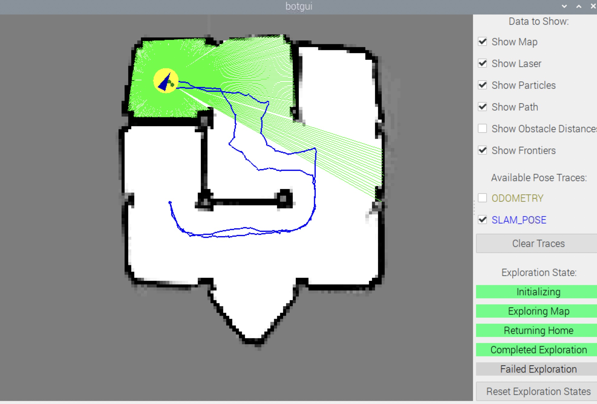

About Me
I am a second-year master student in M.S. Robotics @ University of Michigan Ann Arbor. I am particularly interested in robot manipulation, path planning and perception ü§ñ.Currently looking for a full-time job in Robotics after graduating in May 2024.
For more information about me and my cats, please check out the sections on the left.
Education
2022-2024University of Michigan-Ann Arbor
M.S. Robotics
2018-2022
University of Wisconsin-Madison
B.S. Biological System Engineering - Machinery
B.S. Computer Science
Work Experience
Honda Research Institute
Aug 2023 - Dec 2023
MDP Student Researcher
Topics:
Path Planning, UGV GPS-based Waypoints Navigation, Dynamic Obstacle Avoidance, Multi-agent Control, UAV Control and Communication
Skills:
ROS, C++, Python, Robotics Algorithm R&D, Data Processing
Learn More
Problem Addressed:
One of the approaches of vehicle-to-everything (V2X) and automated vehicle research to enhance safety, mobility, and sustainability to a variety of road users such as drivers, pedestrians, and micromobility users/providers.
Project Target:
• Develop a 2-D path planning/following algorithm for drones and unmanned ground vehicles (UGV) for both real world and simulation environments.
• Implement the system to include a drone motion planner to achieve scalable harmonious navigation while avoiding static and dynamic objects.
My Contribution:
• Hands on UGVs and prepare the system for wireless connection and command, simple operation using PlayStation Controller and ROS messages.
• Develop GPS RTK based Waypoint Navigation system to follow a predefined path.
• Collaborate with UAV team to communicate essential information for their motion planning using ROS nodes.
• Construct overall ROS architecture including logic flow, system validation, and communication implementation for the team.
• Experiment using one DJI drone and two Jackal UGVs in both real-world and simulated environments.
Dassault Systèmes Delmia R&D
May 2023 - Aug 2023
Robotics Algorithm Software Engineering Intern
Topics:
Robot Arm Path and Motion Planning, Static and Dynamic Obstacle Avoidance, Robot Simulation
Skills:
ROS, C++, Robotics Algorithm R&D, 3DExperience, CATIA, Python
Learn More
Problem Addressed:
The potential of ROS path planning, motion planning, simulation, and control in the industrial robot arm field.
My Contribution:
• Research of various robot arm path planning algorithms implemented in ROS MoveIt and potential areas of integration with the 3D Experience Robotics solution.
• Development of various solver algorithms that relate to industrial robotics and robot path planning.
• Integrate ROS path planning with 3DExperience. By defining the path planning tool and configs, the robot will generate a obstacle avoided path automatically.
• Engagement in discussions that relate to code design, architectural designs and feasibility of development in industry.

Research Experience
Multi-Robust-SLAM
Jan 2024 - May 2024
Hybrid Dynamic Robotics Lab, University of Michigan
Supervised by: Prof. Xiaonan Huang
Topics:
SLAM, Evluation Framework, Multi-agent System, ROS, Deep Learning
Skills:
Python, ROS, Docker, Pytorch, C++, CUDA
Learn More
Problem Addressed:
There is not an comprehensive evaluation framework that compatible for most multi-agent SLAM systems.
My Contribution:
• Benchmarking
- COVINS-G
• Identifing the key metrics for multi-agent SLAM evaluation.
Gaussian Splatting based LiDAR SLAM
Sept 2023 - May 2024
UM Ford Center for Autonomous Vehicles (FCAV), University of Michigan
Supervised by: Prof. Katie Skinner
Topics:
LiDAR SLAM, NeRF, Gaussian Splatting, 3D Reconstruction, NDT Gaussian Regristration, Loop Closure, Deep Learning
Skills:
Python, ROS, Docker, Pytorch, C++, CUDA
Learn More
Problem Addressed:
LONER, proposed by PhD students Pou-Chun and Seth in FCAV lab, introduces the first real-time neural implicit
LiDAR-only SLAM algorithm which adapts to outdoor environments and provides accurate online pose estimation.
It is able to reconstruct state-of-the-art maps and generate
trajectories efficiently and qualitatively, in addition, to provide
an implicit geometry representation to support novel view
depth rendering. However, loop closure can be introduced in
LONER for further improvement. This project is intended to deal with
the loop closure issue in original paper LONER.
My Contribution:
• Benchmarked
- GO-SLAM, Co-SLAM, ESLAM
• Implmenetation of Depth Supvervised Gaussian Splatting
• Gaussian Splatting based real-time SLAM system
Defect Detection in Microscopy Images
May 2021 - Sept 2021
Informatics Skunkworks Lab, University of Wisconsin
Supervised by: Prof. Dane Morgan
Topics:
Deep Learning, Mask R-CNN, Material Defection Identify
Skills:
Python, Yolo, TrackPy, DeepSort
Learn More
Problem Addressed:
The challenge to determine the number density and size distribution of each defect type in material using electron microscopy.
My Contribution:
• Practiced skills in object detection and tracking on abundant minuscule objects in microscopy images.
• Examined applicability of computer vision technologies like TrackPy, Yolo, DeepSort with material defection videos.
Smart Air Supply System for Dairy Cows
Jan 2020 - May 2022
Heat and Mass Transfer Lab, University of Wisconsin
Supervised by: Prof. Christopher Choi
Topics:
Fluid and Thermal Dynamics, Heat Stress Simulation, Systematic Design and Test
Skills:
Computational Fluid Dynamics
Learn More
Problem Addressed:
Design a smart air supply system prototype that will cool and bring fresh air into dairy barns to reduce heat stress and improve the health and efficiency of dairy cows.
My Contribution:
• Led CFD simulation works in a senior design group and two semesters of independent study.
• Modeled and tested novel system using CFD to simulate heat and airflow on the body surface of dairy cows in the ventilated barn.
• Participated in weekly/daily group discussions and learned new skills such as collecting data with sensors and predicting
the CFD simulation results by using CNN.

Projects
Automatic Parking System
ROB 599: Autonomous Vehicle
Topics:
Kinematics and Linearized Dynamics Car Model, MPC Control, Path Planning
Skills:
Python, CV2
Learn More
Spet 2023-Dec 2023
• In this project, we established a comprehensive Automatic Parking System with known parking lot map
• Construct kinematics bycicle model
• Build dynamics model with linearization for car using the Nonlinear Tire Model Magic Formula
• Implemented and tuned linear and non-linear MPC controller with quadratic cost function
• Deply Hybrid A* for path planning with high-dimensional state spaces allows for the generation of smoother and handle realistic motion constraints
• Evaluate performance with deploying simulated user-defined parking lots with car number and layout using CV2
Ordinary Differential Equation Based Learning Dynamics for Robotic Systems
ROB 498: Robot Learning for Planning and Control
Topics:
Machine Learning, Robot Control, Ordinary Differential Equation Approach, Path Planning
Skills:
Python
Learn More
Mar 2023-May 2023
• Compared Panda robot arm planar pushing task behavior on discrete numerical differential equation based networks
(ResNet, PolyNet and FractalNet) and continuous neural ordinary differential equation based network.
• Evaluated learned models on an open-source forward dynamics dataset collected by using KUKA LWR and Baxter.

Loc-NeRF++ : An Enhanced Robot Localization using Neural Radiance Fields
ROB 530: Mobile Robotics
Topics:
SLAM, Robot Percetion, NeRF, Partical Filter, Monte Carlo Localization, Machine Learning
Skills:
Python, ROS, Docker
Learn More
Mar 2023-May 2023
• Reproduction of Loc-NeRF, a real-time Monte Carlo localization method uses NeRF as a map representation.
• Achieved efficient localization performance with adaptive particle filter by using KLD-Sampling method.
• Evaluated on both indoor (LLFF) and novel largescale outdoor (OMMO) NeRF datasets.


VisToMoRe: Vision and Touch Multimodel Representation
ROB 599: Deep Learning for Robot Perception
Topics:
Deep Learning, Robot Perception, Robot Manipulation, Multimodel Representation, Haptical Sensor Data Process
Skills:
Python
Learn More
Apr 2023-May 2023
• Reproduction of the IEEE ICRA 2019 Best Conference Paper "Making Sense of Vision and Touch: Self-Supervised Learning of Multimodal Representations
for Contact-Rich Tasks".
• Make robot be able to perform contact-rich manipulation tasks by using multimodal information.
• Learn a model for multimodal representation.
• Demonstration of insertion tasks from panda simulation enviornment.
• Implement and compare across several algorithms to compute multimodal representation as latent layer: addition, concatenation, adaptive weighted average, and Gaussian predicted.

Precise Robot Arm Manipulation with Robot Perception Using RGBD Camera
ROB 550: Robotic Systems Laboratory
Topics:
Computer Vision, OpenCV, Robot Manipulation and Control, FK/IK, Path Planning for Robot Arm, Depth Camera Calibration, gravity compensation
Skills:
Python, C++, ROS
Learn More
Sept 2022-Dec 2022
Computer Vision:
• Developed camera (Realsense L515) intrinsic and extrinsic calibration using Kabasch algorithm.
• Automatic workspace reconstruction using affine transformation of workspace grids, and masking out the robot arm during operation.
• Using CIE Lab color space for block color identification.
• Implemented the method of focusing on the topmost block on each stack of blocks.
• Evaluated accuracy of camera calibration using heatmap
 Kinematics:
Kinematics:
• Implemented Denavit-Hartenberg forward kinematics and geometric inverse kinematics for RX-200.
• Deployed gravity compensation by modeling the defection in each joint as a linear spring
• Designed gripper for potential replacement of the original one on RX-200 with 3D Modeling
Competition:
- 9 blocks, random sizes, random colors, possibly stacked
- Pick 'n stack: Stack up the large and small blocks in separate stack in rainbow color order, scored on completeness and correctness of the order.
- Line 'em up!: Line up the large and small blocks in separate lines in rainbow color order, scored on neatness and correctness of the order.
- To the sky! : Stack up the large blocks in any color order, as hight as possible, scored on number of blocks.
*** Results: Second place amoung 15 teams.
Mobile Robot Navigation with LiDAR
ROB 550: Robotic Systems Laboratory
Topics:
LiDAR SLAM, Robot Control, Path Planning, Unkown Area Explore, A* Algorithm, PID Control, Particle Filter
Skills:
Python, C++, ROS
Learn More
Sept 2022-Dec 2022
Motion & Odometry
• Developed wheel speed characterization and PID controllers for wheel speed and robot frame with odometry and gyro sensor fution
SLAM
• Constructed an Occupancy Grid Mapping using the Bresenham's algorithm along LiDAR rays.
• Implemented Monte Carlo Localization and A* Algorithm for path planning.
• Deployed Map Exploration with algorithm for finding the frontiers and compared between BFS and DFS efficiencies
Competition:
• Looper: From the starting pose, make 4 circuits around a convex arena by driving the path given using localization only. Return to the starting pose perfectly.
• Dungeon Explorer: From the starting position, explore the complex maze and make a map of the environment. Then return to the start location.
***Results: First place in Looper event, second place in overall competition among 15 teams.

Enhanced Visual Checkout System
EECS 598: Mobile and Pervasive Sensing and Computation
Topics:
Computer Vision, Deep Learning, Object Classification Enhancement in Low-light
Skills:
Python, Yolo, Unreal Engine
Learn More
Sept 2022-Dec 2022
• Designed a vision-based system improves accuracy of product detection in Autonomous store at low-light conditions.
• Collaborated with three other projects to construct a robust enhanced visual detection system containing: an
Unreal Engine simulation for training data, mask extraction of hand pose, and best-camera-angle selection etc.

Ping Pong Shooting Robot
ME 439: Introduction to Robotics
Topics:
Forward and Inverse Kinematics, Robot Arm Motion Planning, Projectile Prediction, PID Control
Skills:
Python, ROS, C++
Learn More
Mar 2021-April 2021
• Prototyped robotic arm version of Beer Pong party game to achieve almost perfect accuracy.
• Designed a 4-joints robot arm to aim and struck the ping pong ball to target cups with given coordinates
using inverse kinematics, projectile motion, and feedback control.


{kind=link}
{kind=link}
{kind=link}
{kind=link}
{kind=link}
{kind=link}